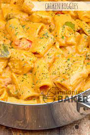

Utica Riggies

Classic Utica Riggies - there's nothing quite like it
Now these chicken riggies will make you sweat. So be sure to get a
glass of water ready and lets get to work!
Imagine if soul food, new orleans cajun, and italians had a baby in the
form of a dish. This would be it.
Ingredients
Marinade
- 1/2 cup dry sherry
- 2 tbsp olive oil
- 3 garlic cloves minced
- 1 tsp dried oregano
- 1 lb bonless skinless chicken breasts cubed
Sauce
- 1 tbsp butter
- 1/2 each sweet red & green pepper chopped
- 1 tsp red pepper flakes -OR- 2 pickled hot cherry peppers chopped
- 1 small onion chopped
- 2 garlic cloves minced
- 1/2 cop dr sherry -OR- chicken stock
- 29oz can tomato puree
- 1 tsp salt
- 1/2 tsp pepper
- 16oz box rigatoni
- 3/4 cups heavy whipping cream
- 4 ounces cream cheese cut up
- 3/4 cup grated romano cheese
Instructions
- In a large resealable plastic bag, combine sherry, oil,
garlic and oregano. Add chicken; seal bag and turn to coat.
Refrigerate 3 hours.
- Drain chicken, discarding marinade. Heat a Dutch oven over
medium-high heat. Add chicken in batches; cook and stir
until no longer pink. Remove from pan.
- In same pan, heat butter over medium-high heat. Add peppers, onion
and garlic; cook and stir until tender.Stir in sherry; bring to a
boil. Stir in tomato puree, salt and pepper; return to a boil.
Reduce heat; simmer 8-10 minutes or until slightly thickened,
stirring occasionally. Add chicken; heat through.
- Meanwhile, in a stockpot, cook rigatoni according to package instructions
- In a small saucepan, combine cream and cream cheese over medium heat;
cook and stir until blended. Add to chicken mixture; stir in Romano
cheese.
- Drain rigatoni; return to stockpot. Add sauce to pasta; toss to combine.